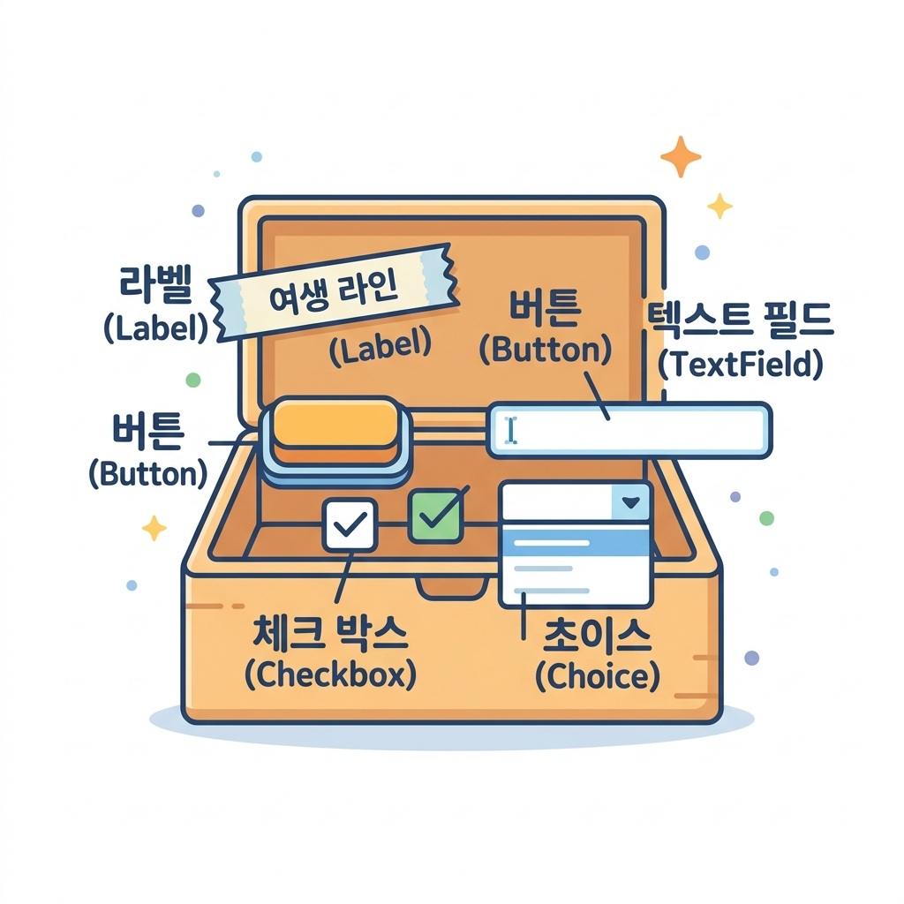
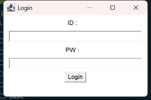

02. AWT 컴포넌트
화면을 꽉 채울 다채로운 부품들을 만나볼 시간입니다! 🧰 자바 GUI 화면을 구성하는 핵심 컴포넌트와 그들을 담아주는 컨테이너를 자세히 알아보고 로그인 화면을 만들어봅시다.
1. 컴포넌트(Component)와 컨테이너(Container)
자바 AWT에서 화면에 그려지는 모든 시각적 요소를 컴포넌트라고 부릅니다. 이들은 java.awt.Component라는 단 하나의 거대한 부모 클래스를 똑같이 물려받아 만들어졌습니다.
💡 학용품 상자 비유로 이해하기
- 컴포넌트 (Component): 연필, 지우개, 자, 풀 등 필통 속에 쏙 들어가는 각각의 도구들입니다. 화면에 배치되는 버튼, 글씨 레이블, 텍스트 상자 등이 여기에 속해요.
- 컨테이너 (Container): 연필과 지우개들을 가지런히 보관하는 필통이나 서랍장입니다. 컴포넌트들을 일정한 자리에 가두고 모아주는 특별한 컴포넌트입니다.

🧱 주요 컨테이너의 종류
- Frame (프레임): 가장 널리 쓰이는 독립된 윈도우 창입니다. 제목 바, 닫기/최소화 버튼, 크기 변경 테두리를 기본 제공하여 프로그램의 메인 도화지가 됩니다.
- Panel (패널): 투명한 유리판과 같습니다. 단독으로 화면에 뜰 수는 없지만, 프레임 안에서 컴포넌트 여러 개를 깔끔하게 그룹으로 묶어 배치할 때 유용하게 쓰입니다.
- Dialog (다이얼로그): 경고창이나 안내창처럼 사용자에게 메시지를 전달하고 확인을 유도하는 팝업 대화상자입니다.
2. 주요 AWT 컴포넌트 요약
화면을 구성할 7가지 단골 컴포넌트들을 만나봅시다!
| 컴포넌트 이름 | 설명 | 주요 메서드 및 팁 |
|---|---|---|
| Label (라벨) | 화면에 고정된 텍스트 문자열을 표시합니다 (수정 불가). | new Label("텍스트", Label.CENTER) (정렬 설정) |
| Button (버튼) | 사용자가 클릭하여 신호를 전달할 수 있는 누름단추입니다. | new Button("확인") |
| TextField (텍스트 필드) | 사용자로부터 한 줄의 글자를 입력받는 빈칸입니다. | tf.setEchoChar('*') (비밀번호 가리기) |
| TextArea (텍스트 영역) | 일기장처럼 여러 줄의 긴 글을 입력받는 입력란입니다. | new TextArea("초기값", 줄수, 글자수) |
| Checkbox (체크박스) | 여러 항목 중에서 여러 개를 선택(Check)하거나 해제할 수 있습니다. | new Checkbox("사과", true) (선택된 상태) |
| Choice (초이스) | 클릭하면 아래로 슥 펼쳐지며 목록 중 하나를 고르는 드롭다운 메뉴입니다. | day.add("MON"); day.add("TUE"); |
| List (리스트) | 목록을 바깥에 넓게 띄워두고 그중 여러 개를 선택할 수 있게 합니다. | new List(보여줄줄수, 다중선택여부) |
3. 실습 예제: 간단한 로그인(Login) 화면 만들기
AWT의 여러 컴포넌트를 사용하여 ID와 비밀번호를 입력하고 로그인 버튼을 누를 수 있는 클래식한 로그인 창을 만들어봅시다.
📄 실습 예제 소스 코드
- 실습 예제 파일: ComponentExam.java (경로:
sample/ComponentExam.java)
import java.awt.Frame;
import java.awt.Label;
import java.awt.TextField;
import java.awt.Button;
import java.awt.FlowLayout;
public class ComponentExam {
public static void main(String[] args) {
// 1. 메인 윈도우 창(Frame) 생성
Frame f = new Frame("Login");
f.setSize(300, 200);
// 물 흐르듯 순서대로 배치하는 레이아웃 매니저 설정
f.setLayout(new FlowLayout());
// 2. ID 입력 부분 생성
Label idLabel = new Label("ID :");
TextField idText = new TextField(20); // 20글자 크기의 입력 공간
// 3. 비밀번호 입력 부분 생성 (입력 글자를 *로 숨깁니다)
Label pwLabel = new Label("PW :");
TextField pwText = new TextField(20);
pwText.setEchoChar('*');
// 4. 로그인 누름버튼 생성
Button loginBtn = new Button("Login");
// 5. 프레임(컨테이너)에 컴포넌트들을 차례대로 추가(add)
f.add(idLabel);
f.add(idText);
f.add(pwLabel);
f.add(pwText);
f.add(loginBtn);
// 6. 창 보이기
f.setVisible(true);
}
}
💻 컴파일 및 실행 방법
# 1. 02_awt_components 디렉토리로 이동 후 컴파일
javac -d sample sample/ComponentExam.java
# 2. 실행
java -cp sample ComponentExam
🖥️ 실행 결과 화면

💡 미니 팁: ID와 PW 텍스트 상자 옆의 버튼이 둥글둥글하지 않고 고전적인 회색 평면 버튼이죠? 이것이 바로 사용하고 계신 운영체제(Windows 등)의 구형 기본 UI 부품을 직접 빌려 렌더링한 Heavyweight의 흔적입니다!
🔤 코딩 영단어 학습
컴포넌트 설계에 활용되는 주요 단어들의 뜻을 익혀봅시다.
- Component (컴포넌트)
- 뜻: 구성 요소, 부품
- 설명: 화면을 수놓는 버튼(
Button), 입력란(TextField), 글자판(Label) 등 GUI 화면을 조립하는 최소한의 부품들을 지칭합니다.
- Container (컨테이너)
- 뜻: 그릇, 보관함
- 설명: 다른 부품(컴포넌트)들을 안에 넣고 묶어주는 그릇 역할을 하는 특별한 컴포넌트입니다.
Frame과Panel이 대표적입니다.
- Checkbox (체크박스)
- 뜻: 확인 표시용 네모 상자
- 설명: 네모난 상자 안에 V자 표시를 켰다 껐다 하며 다중 선택을 가능하게 하는 UI 도구입니다.
- Choice (초이스)
- 뜻: 선택, 대안
- 설명: 한 줄만 보여주다가 클릭하면 밑으로 주르륵 선택 항목 목록을 내려주는 드롭다운 형태의 컴포넌트입니다.
이전 학습
« 31.1 AWT 개요
다음 학습
31.3 AWT 배치관리자 »
서브목차